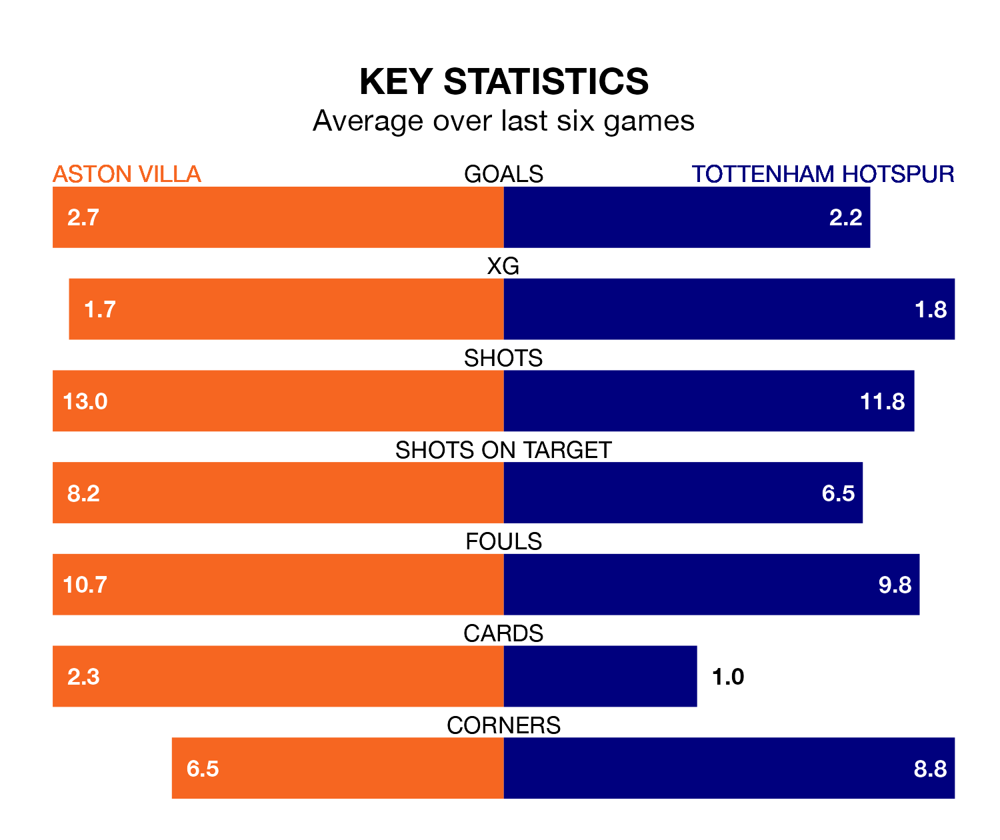

Aston Villa host Tottenham Hotspur at Villa Park on Sunday lunchtime on the back of three consecutive wins in the Premier League.
Villa have picked up 12 points from their last six games, and they face a Spurs side who also won their last match, and have collected 11 points from the last possible 18.
With 59 goals in 27 games so far this season, Villa are scoring more than average in the league with 2.2 goals per game. And they are conceding fewer than average, letting in 37 goals at a rate of 1.4 per game.
Spurs are also above average scorers, with 2.1 goals per game, compared to a league average of 1.6. They have conceded 1.5 goals per game.
In Ollie Watkins, the Villa have one of the league's most on-form strikers so far this season. He has notched 16 goals in 27 appearances, to sit second in the scoring charts.
His goal rate of one every 150 minutes is slightly quicker than that of Heung-Min Son, Tottenham's top scorer with a goal every 147 minutes, and a total of 13 goals in 23 games.
In the last 10 years, Villa and Spurs have played each other on 15 occasions. Villa won five of them and Spurs 10.
On average, the Villa scored 1.0 goal and Spurs 1.9 in those matches.
Their last meeting was on November 26, when Villa won 2-1 away.
The home team are fourth in the table after 27 games, of which they have won 17 and drawn four, earning 55 points.
The visitors are one place behind Villa in fifth, with 15 wins and five draws putting them on 50 points.
Villa's last match was on March 2, a 3-2 win against Luton Town, with Watkins (two) and Lucas Digne getting the goals for the Villa.
Spurs beat Crystal Palace 3-1 last time out, also on March 2, with Cristian Romero, Son and Timo Werner on the scoresheet.
Sunday's match will be refereed by Chris Kavanagh, who has taken charge of 14 Premier League games so far this season, issuing one red card and booking 64 players. He has awarded seven penalties.
The last Spurs game Kavanagh refereed was the 4-1 win at home against Newcastle United on December 10. He is yet to oversee a match featuring Villa this season.
Updated: 09:34 (UTC), 08/03/24